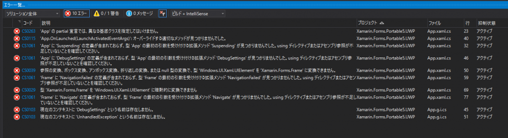

前回はWCFの簡単なサンプルをテストしました。
Problem
UWPをビルドしようとしても、何故かビルドエラーが出ます。 どうも、クラス名が衝突しており、意図したクラスが使われないことが原因のようです。

{kind=link}
エラーの山
Resolution
解決方法はシンプル。 下記は修正前のApp.xaml.csです。 [code lang=”csharp”] using System; using System.Collections.Generic; using System.IO; using System.Linq; using System.Runtime.InteropServices.WindowsRuntime; using Windows.ApplicationModel; using Windows.ApplicationModel.Activation; using Windows.Foundation; using Windows.Foundation.Collections; using Windows.UI.Xaml; using Windows.UI.Xaml.Controls; using Windows.UI.Xaml.Controls.Primitives; using Windows.UI.Xaml.Data; using Windows.UI.Xaml.Input; using Windows.UI.Xaml.Media; using Windows.UI.Xaml.Navigation;
namespace Xamarin.Forms.Portable5.UWP { ///
///
#if DEBUG if (System.Diagnostics.Debugger.IsAttached) { this.DebugSettings.EnableFrameRateCounter = true; } #endif
Frame rootFrame = Window.Current.Content as Frame;
// Do not repeat app initialization when the Window already has content, // just ensure that the window is active if (rootFrame == null) { // Create a Frame to act as the navigation context and navigate to the first page rootFrame = new Frame();
rootFrame.NavigationFailed += OnNavigationFailed;
Xamarin.Forms.Forms.Init(e); [/code] これを下記のように修正します。 [code lang=”csharp”] sealed partial class App : Windows.UI.Xaml.Application { [/code] [code lang=”csharp”] #if DEBUG if (System.Diagnostics.Debugger.IsAttached) { this.DebugSettings.EnableFrameRateCounter = true; } #endif
Windows.UI.Xaml.Controls.Frame rootFrame = Window.Current.Content as Windows.UI.Xaml.Controls.Frame; [/code] [code lang=”csharp”] if (rootFrame == null) { // Create a Frame to act as the navigation context and navigate to the first page rootFrame = new Windows.UI.Xaml.Controls.Frame(); [/code] Windows.UI.Xaml.ApplicationをXamarin.Forms.Application、Windows.UI.Xaml.Controls.FrameをXamarin.Forms.Frameと判断しているのが原因でした。
Conclusion
Windows7、Windows10と2つの環境で発生しています。私だけの環境だとは思えないのですが…